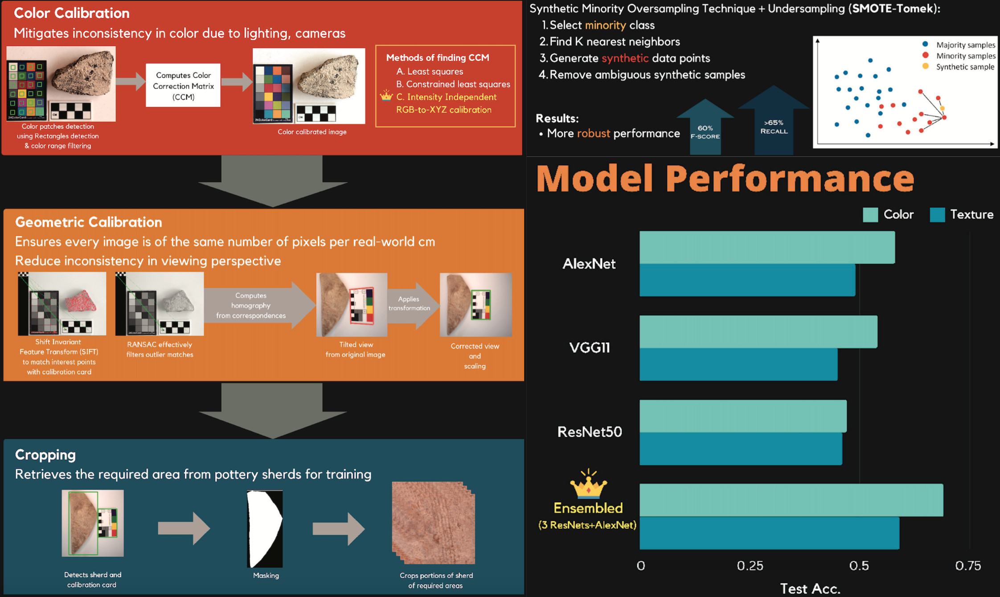
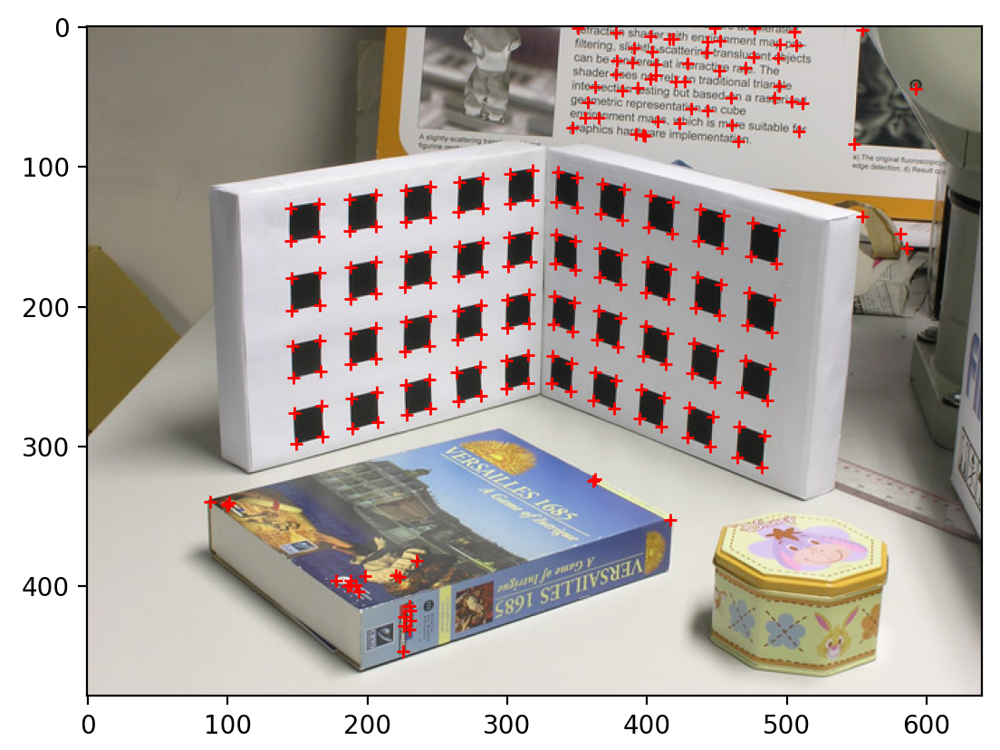
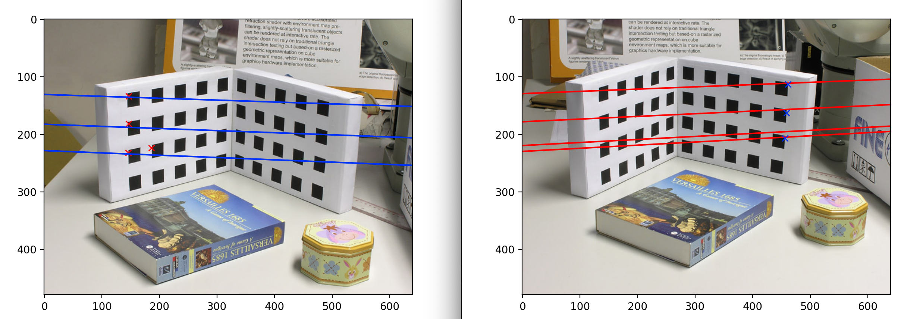
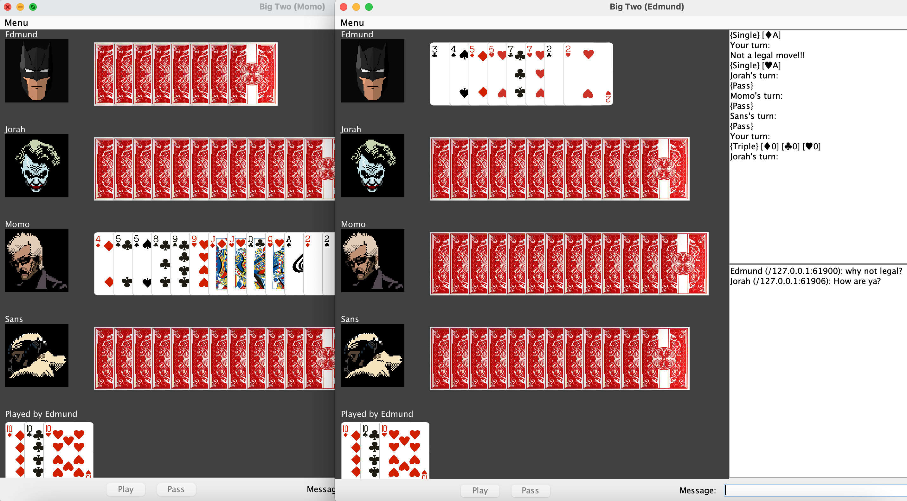

Handling of large quantities of excavated pottery sherd data from Ararat, Armenia.
Involves image processing stage that includes color calibration, geometric calibration and cropping
of desired parts followed by machine learning stage to classify the processed images into useful categories.
Camera Calibration and Epipolar Line Generation


Corner detection of calibration cards. 2D-2D perspective transformation, then 2D-3D projective calibration.
Essential matrix computed to retrieve epipolar lines.
AI Music Generation
Trained from numerous midi music tracks from video games. LSTMs to learn the dependency and logistic regression to allow mood control of music to be generated.
Big Two

Poker card game made in Java. Follows the rule of Big Two in which face value 2 is the strongest.
Supports multiplayer.